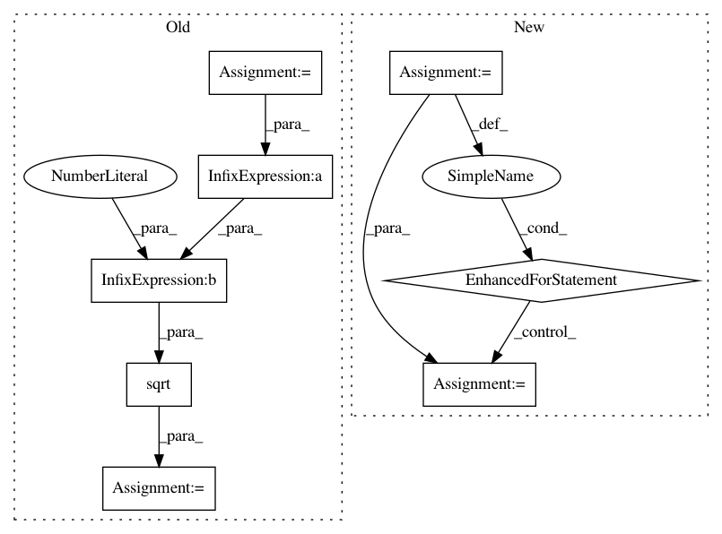

2a28ba889d85c28e490b8b99aef8909e4602aff5,scipy/stats/_binned_statistic.py,,binned_statistic_dd,#Any#Any#Any#Any#Any#Any#,358
Before Change
flatcount = np.bincount(binnumbers, None)
a = flatcount.nonzero()
for vv in xrange(Vdim):
flatsum = np.bincount(binnumbers, values[vv])
flatsum2 = np.bincount(binnumbers, values[vv] ** 2)
result[vv, a] = np.sqrt(flatsum2[a] / flatcount[a] -
(flatsum[a] / flatcount[a]) ** 2)
elif statistic == "count":
result.fill(0)
flatcount = np.bincount(binnumbers, None)
a = np.arange(len(flatcount))
After Change
result.fill(0)
flatcount = np.bincount(binnumbers, None)
a = flatcount.nonzero()
for i in np.unique(binnumbers):
for vv in xrange(Vdim):
//NOTE: take std dev by bin, np.std() is 2-pass and stable
result[vv, i] = np.std(values[vv, binnumbers == i])
elif statistic == "count":
result.fill(0)
flatcount = np.bincount(binnumbers, None)
a = np.arange(len(flatcount))
In pattern: SUPERPATTERN
Frequency: 3
Non-data size: 8
Instances
Project Name: scipy/scipy
Commit Name: 2a28ba889d85c28e490b8b99aef8909e4602aff5
Time: 2019-06-30
Author: rlucas7@vt.edu
File Name: scipy/stats/_binned_statistic.py
Class Name:
Method Name: binned_statistic_dd
Project Name: pyannote/pyannote-audio
Commit Name: 16fb800c2d3f6d7198ad237adcab8f60828d0982
Time: 2017-05-15
Author: bredin@limsi.fr
File Name: pyannote/audio/embedding/segmentation.py
Class Name: Segmentation
Method Name: apply
Project Name: scikit-image/scikit-image
Commit Name: dd17b42f452bc156f55e3400f8ebc84d58761e65
Time: 2019-12-30
Author: gregory.lee@cchmc.org
File Name: skimage/filters/_window.py
Class Name:
Method Name: window